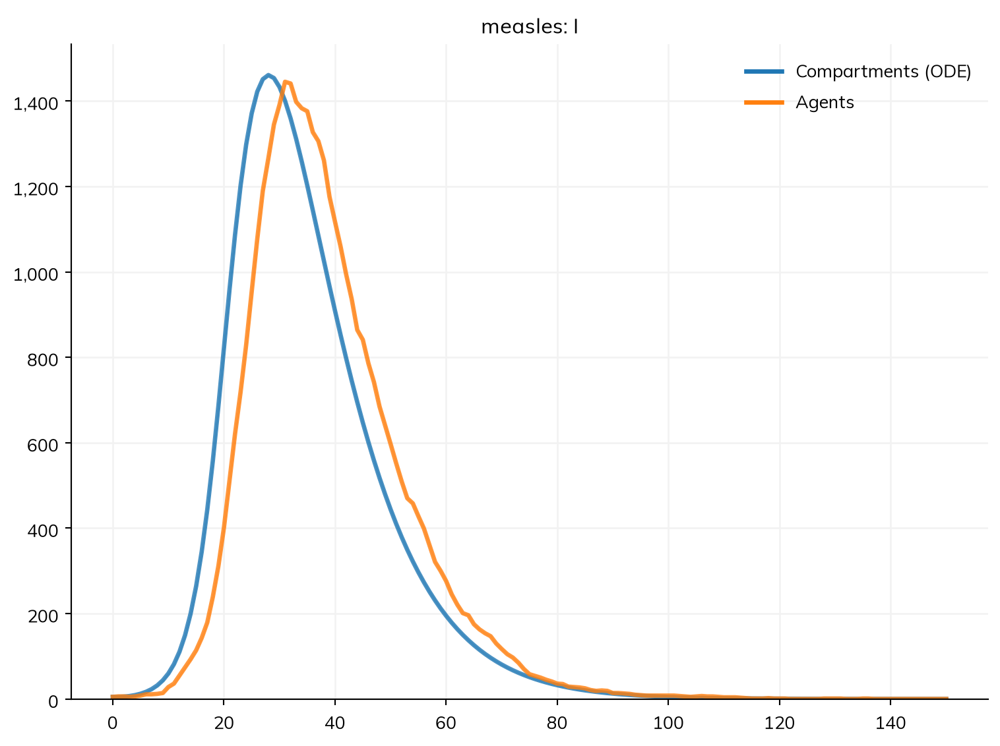
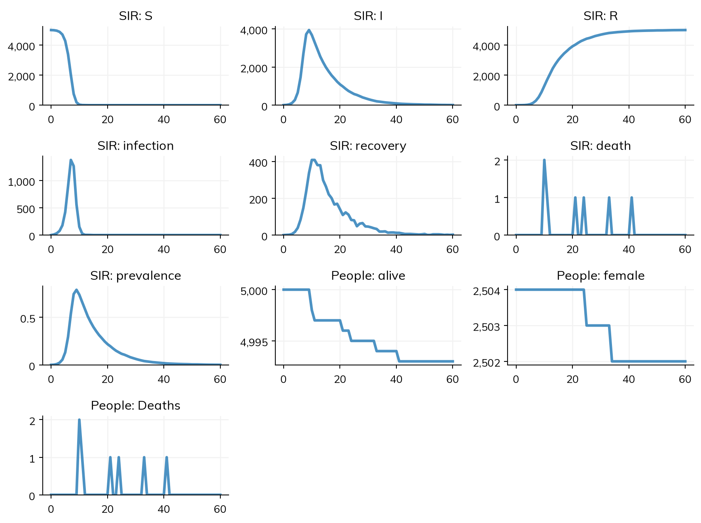
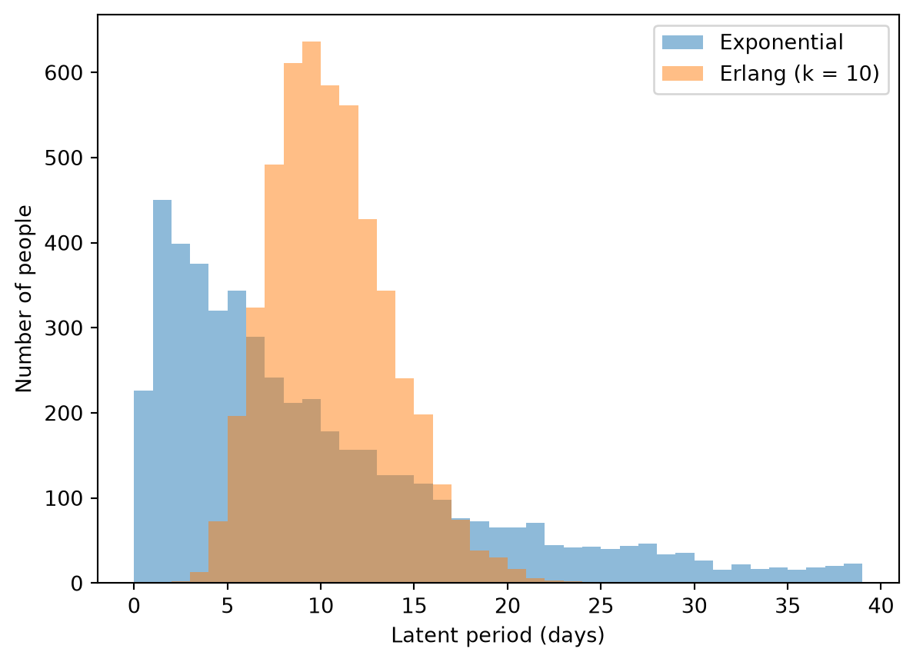
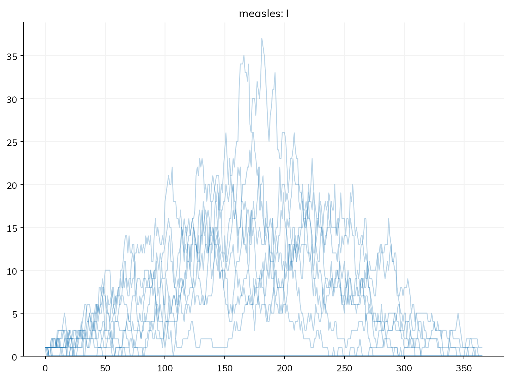
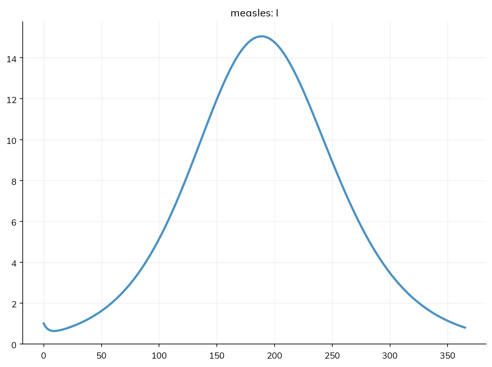
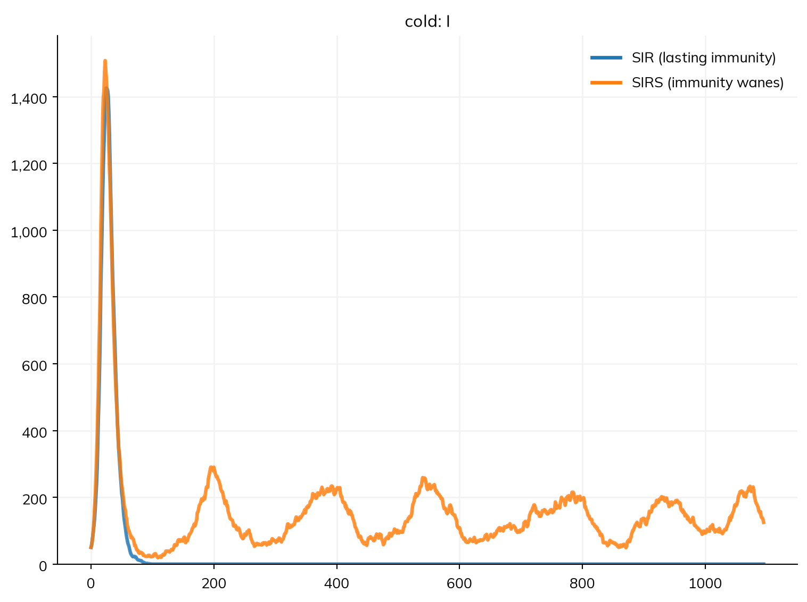
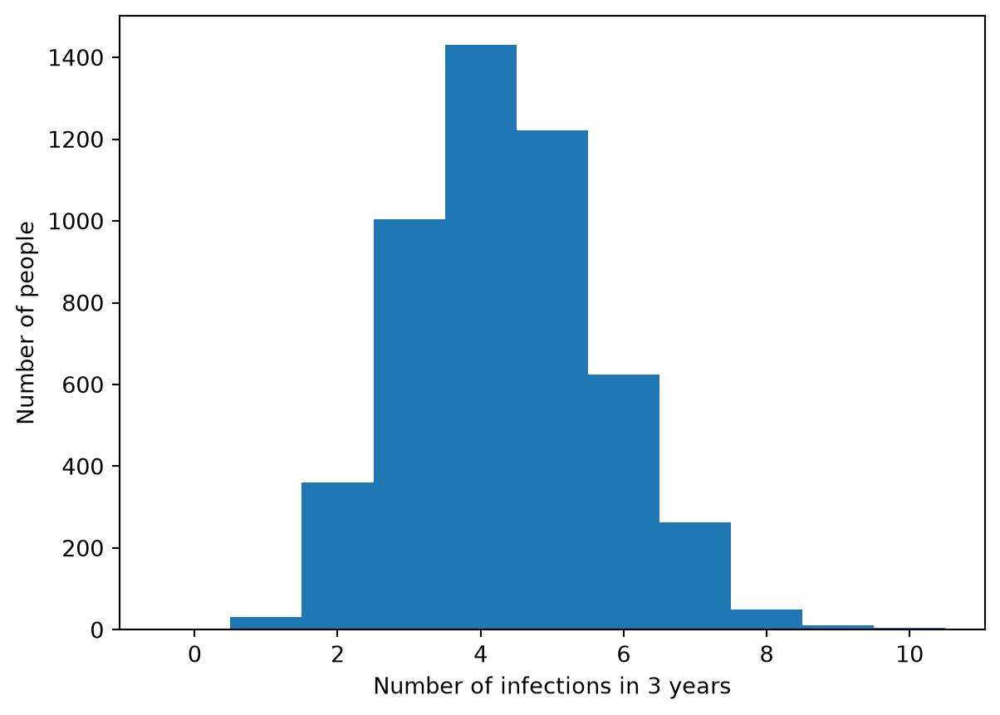

Diseases are the cornerstone of almost any Starsim analysis. In the core tutorials (T1–T9), the measles model ran as compartments: the numbers of people in S, E, I, and R. This tutorial runs the same disease as agents, where each person has their own state, their own times of moving from one state to the next, and, if you want, their own infectiousness and susceptibility. The model is written exactly as before; what changes is what you can ask of it.
By the end of this tutorial, you’ll understand how to:
run a disease as agents, and change the parameters of a disease from the library;
look at the state and history of each person;
see how chance decides whether one imported case starts an outbreak;
give people different infectiousness, so that a few cause most infections (superspreading);
let immunity wane, and count how many times each person is infected.
Step 1: A disease as agents
Here is the SEIR measles model from T3. Giving the sim n_agents= instead of total_pop= runs it as agents (solver='abm' says so explicitly); here there are 5,000 of them, each a person:
import numpy as npimport matplotlib.pyplot as pltimport starsim as ssS, E, I, R = ss.states('S E I R')infection = S >> E @1.9*I # β = 1.9 per dayprogression = E >> I @ ss.days(10) # Latent for 10 days on averagerecovery = I >> R @ ss.days(8) # Infectious for 8 days on averagemeasles = ss.Disease(infection, progression, recovery, init=dict(I=0.001))sims = {'Compartments (ODE)': ss.Sim(measles, total_pop=5000, stop=ss.days(150)),'Agents': ss.Sim(measles, n_agents=5000, stop=ss.days(150)),}msim = ss.parallel(sims)msim.plot('measles.I')
MultiSim: 2 runs of 2 scenarios (Compartments (ODE), Agents)
Done in 0.36 s

The two agree closely: with 5,000 people and 5 infectious at the start, chance plays only a small part, and the agents give nearly the same epidemic as the ODE. They differ a little because agents take whole daily steps (the run prints a note saying how much this can matter), and because each agent’s course is drawn at random. Everything you learned in the core tutorials (describe(), results, interventions, scenarios) works the same way for agents.
Starsim also has a few diseases ready-made. Much like sims or networks, a disease can be customized by passing in parameters. Here is the library SIR model, with parameters close to measles:
sir = ss.SIR(dur_inf=ss.days(8), beta=ss.perday(1.9), init_prev=0.001, p_death=0.002)sim = ss.Sim(sir, n_agents=5000, stop=ss.days(60))sim.run()sim.plot()
Sim: sir, as 5,000 agents, days 0 to 60
Running as agents: n_agents was given
Note: consider a shorter step (e.g. dt=ss.days(0.25)): each step is 1 day, and infection transmits at up to 1.9 per day (with everyone infectious), 85% in a step (and I is fast too). Taking whole steps, agents may differ from the ODE by an amount of that order; sim.check_dt() shows how much it matters
Done in 0.027 s; sir: 4,995 infections; at most 3,941 infectious, on day 9

Notice how we modified several key parameters:
dur_inf=ss.days(8): how long people stay infectious (8 days, on average)
beta=ss.perday(1.9): the transmission rate
init_prev=0.001: starting with 0.1% of the population infected
p_death=0.002: 0.2% of infected people die
The results are stored in sim.results.sir, and can also be directly accessed via sim.diseases.sir.results. ss.SIR, ss.SIS, and ss.SEIR are the textbook models, with exponential durations. For more detail on any of the diseases in the Starsim library of diseases (import starsim.library as ssl), please refer to the Diseases page of the model library.
Step 2: Looking at individual people
As agents, the sim keeps each person’s state, and the time they entered and are due to leave it. sim.people.to_df() gives a table with a row for each person and a column for each of these (measles.ti_E is the step on which each person was infected, and measles.ti_I the step on which they became infectious):
sim.people.person(uid) gives everything about one person, and a state gives the IDs (UIDs) of the people in it: measles.R.uids are those who have recovered. Since each person draws their own latent period, you can look at the spread of them directly. In T3, an Erlang latent period changed the course of the epidemic, compared with an exponential one of the same average; as agents, you can see why, person by person:
S, E, I, R = ss.states('S E I R')progression = E >> I @ ss.erlang(k=10, mean=ss.days(10)) # Latent for 10 days on average, with less spreadmeasles_erlang = ss.Disease(S >> E @1.9*I, progression, I >> R @ ss.days(8), init=dict(I=0.001), name='measles')sim_erlang = ss.Sim(measles_erlang, n_agents=5000, stop=ss.days(150), verbose=0)sim_erlang.run()plt.figure()for label, s in {'Exponential': sim, 'Erlang (k = 10)': sim_erlang}.items(): latent = s.diseases.measles.E.stays # How long each person who has been through E stayed there: their latent period, in daysprint(f'{label}: mean latent period {np.mean(latent):.1f} days') plt.hist(latent, bins=np.arange(0, 40), alpha=0.5, label=label)plt.xlabel('Latent period (days)')plt.ylabel('Number of people')plt.legend();
Exponential: mean latent period 10.2 days
Erlang (k = 10): mean latent period 10.1 days

With an exponential latent period, short latent periods are the most common, and many people take three weeks or more (the longest are off the chart); with an Erlang distribution, most people become infectious between about 6 and 17 days after infection. Both average about 10 days, as declared. The times are whole days, since agents move between states in whole steps. E.stays covers everyone who has entered E and left it (the seeded cases, who started in I, never did), and leaves out those still in it. Subtracting the times of entering (m.ti_I - m.ti_E) would give a day more, since an infection happens at the end of its step and becoming infectious at the start of one; see People and agents. Array indexing shows the other ways to pick out people, and People and agents what each person has.
Step 3: Chance, and the first case
In a compartmental model, an infection that starts with R above 1 always takes off. In reality, the first few cases may recover before infecting anyone, and the outbreak dies out by chance. Agents capture this, since each person’s infections and recovery are drawn at random.
Take the town of T5, where 90% of people are already immune, and suppose one infectious person arrives. Each case then infects about 1.9 × 8 × 0.1 ≈ 1.5 others, on average. Here are 20 runs as agents, each with its own random seed, shown one line each (lines=True), and the ODE for comparison:
S, E, I, R = ss.states('S E I R')infection = S >> E @1.9*Iprogression = E >> I @ ss.days(10)recovery = I >> R @ ss.days(8)measles = ss.Disease(infection, progression, recovery, init=dict(R=0.9), init_n=dict(I=1)) # 90% immune, and 1 casepars =dict(n_agents=5000, stop=ss.days(365), verbose=0)msim = ss.parallel(ss.Sim(measles, **pars), n_runs=20)msim.plot('measles.I', lines=True)ode = ss.Sim(measles, total_pop=5000, stop=ss.days(365), solver='ode', verbose=0)ode.run()ode.plot('measles.I')


The ODE always gives an outbreak, of the same size. As agents, some runs give an outbreak about as large as the ODE’s, and the rest die out after a handful of cases. Counting the runs with fewer than 20 infections in all:
total = msim.results.measles.infection.values.sum(axis=1) # Total infections in each runprint('Share of introductions that die out:', np.mean(total <20))
Share of introductions that die out: 0.6
For a simple epidemic model with an exponential infectious period, theory says that one case dies out with a chance of 1/R, here about 2 in 3, which is close to what the runs give. The number of runs is small, so the share varies from one set of runs to the next. This matters for any question about introductions: how likely an imported case is to start an outbreak, or how long a place stays free of a disease.
Step 4: People who differ: superspreading
So far, every infectious person is equally infectious. For many diseases they are not: most cases infect few others or none, and a few infect many (superspreading). The usual way to describe this is to give each person an infectiousness drawn from a gamma distribution with a mean of 1; its shape parameter, k, is the dispersion. The smaller k is, the more transmission is concentrated in a few people (estimates for SARS in 2003 put k near 0.16); a very large k gives everyone the same infectiousness, as above.
A value that each person has is an attribute, ss.attr(): here, one drawn once for each person when they are made (a trait). ss.modify() then multiplies each person’s infectiousness (rel_trans) by it:
def make_sim(k=None):""" The measles model, with the infectiousness of each person drawn from a gamma distribution with shape k """ S, E, I, R = ss.states('S E I R') infection = S >> E @1.9*I progression = E >> I @ ss.days(10) recovery = I >> R @ ss.days(8)if k isNone: # Everyone equally infectious measles = ss.Disease(infection, progression, recovery, init=dict(R=0.9), init_n=dict(I=1))return ss.Sim(measles, **pars) infectiousness = ss.attr(ss.gamma(a=k, scale=1/k)) # A mean of 1, and a shape (dispersion) of k measles = ss.Disease(infection, progression, recovery, infectiousness=infectiousness, init=dict(R=0.9), init_n=dict(I=1)) superspreading = ss.modify(measles.rel_trans, multiply=infectiousness)return ss.Sim(measles, connectors=superspreading, **pars)for label, k in {'Everyone equally infectious': None, 'k = 1': 1, 'k = 0.2': 0.2}.items(): msim = ss.parallel(make_sim(k), n_runs=40) total = msim.results.measles.infection.values.sum(axis=1)print(label, '- share that die out:', np.mean(total <20), '- median size of the outbreaks that take off:', np.median(total[total >=20]))
Everyone equally infectious - share that die out: 0.65 - median size of the outbreaks that take off: 319.5
k = 1 - share that die out: 0.7 - median size of the outbreaks that take off: 299.0
k = 0.2 - share that die out: 0.775 - median size of the outbreaks that take off: 215.0
The average number each case infects is the same in all three, about 1.5, but the more transmission is concentrated, the more often an introduction dies out: with k = 0.2, about 4 in 5 do, since the first case is most likely one of the many who infect nobody. The outbreaks that do take off are of a similar size in all three. For control, this is the good news of superspreading; the bad news is that the outbreaks that occur can start explosively, from a single event. A compartmental model can’t say this, since it has no individuals to differ.
ss.attr() can also draw a value when something happens to a person (e.g. a severity at infection, with on=infection), or record one; see Diseases. A person’s susceptibility can differ in the same way, with ss.modify(measles.rel_sus, ...).
Step 5: Immunity that wanes
Measles leaves lifelong immunity, but many infections don’t. Let’s turn an SIR model into an SIRS model, where immunity wanes: recovered agents eventually become susceptible again. This is what lets a disease settle into endemic transmission rather than burning through the population once and disappearing. It is one more transition, from R back to S. Here it is for a generic respiratory infection, with an R0 of 0.4 × 7 = 2.8, and immunity that lasts 6 months on average, compared with the same infection without waning:
def make_cold(waning): S, I, R = ss.states('S I R') infection = S >> I @0.4*I # β = 0.4 per day recovery = I >> R @ ss.days(7) # Infectious for 7 days on average infections = ss.attr(1, on=infection, combine='sum', init=0) # The number of times each person has been infected transitions =dict(infection=infection, recovery=recovery)if waning: transitions['waning'] = R >> S @ ss.days(180) # Immune for 6 months on averagereturn ss.Disease(**transitions, infections=infections, init_prev=0.01, name='cold')pars_cold =dict(n_agents=5000, stop=ss.days(3*365), verbose=0)sims = {'SIR (lasting immunity)': ss.Sim(make_cold(waning=False), **pars_cold),'SIRS (immunity wanes)': ss.Sim(make_cold(waning=True), **pars_cold),}msim = ss.parallel(sims)msim.plot('cold.I')

With lasting immunity, there is one epidemic and then the infection is gone. When immunity wanes, the pool of susceptible people is continually replenished, so the infection comes back in waves that settle at an endemic level.
The attribute infections counts the times each person has been infected (combine='sum' adds 1 at each infection). This is a history of each person, which only agents have. After three years with waning immunity:
counts = sims['SIRS (immunity wanes)'].people.cold.infections.valuesplt.figure()plt.hist(counts, bins=np.arange(counts.max() +2) -0.5)plt.xlabel('Number of infections in 3 years')plt.ylabel('Number of people');

Everyone is infected at least once, most people 3 to 5 times, and the number varies by chance from person to person, even though everyone here is alike. A person’s history can be read in a model too: e.g. ss.modify(cold.rel_sus, multiply=0.5, where=cold.infection.count >= 2) would halve the susceptibility of people who have been infected at least twice.
Writing a disease as code
Every disease above is declared: its states and transitions, as in the core tutorials. A disease can also be written as Python code, a class with methods that say what happens to each agent at each step. This is how diseases were written in Starsim 3, and it is still the way to write a disease whose course is easier to say in code than in transitions (e.g. a CD4 count that falls continuously). A5 shows how. Several diseases in one sim, and how they affect each other, are covered in T8.
Exercises
Parameter exploration: Try different durations of immunity in the SIRS model (e.g. 1, 6, and 24 months). How do they affect the epidemic curve, and the number of times people are infected?
SEIRS model: Add a latent period of 2 days to the SIRS model, to make an SEIRS model. Does it change the endemic level?
Superspreading and control: In the town with 90% immune, increase the share susceptible to 20% (init=dict(R=0.8)), so that each case infects about 3 others. What share of introductions die out now, with and without superspreading (k = 0.2)?